Bayesian Optimization
Using Gaussian Processes for Optimization

Bayesian Optimization
As stated above, many problem settings in engineering and science can be formulated as optimization problems of a criterion, commonly called an objective function, $\mathcal{F}(x)$ with respect to some argument $x$. The goal of any optimization is to find the global optimum of such a function $\mathcal{F}(x)$. For linear or convex optimization problems, this is usually feasible, yet optimization becomes difficult for non-linear objective functions. Bayesian optimization tries to tackle such non-linear objective functions by searching for a global optimum in a probabilistical manner.
Optimization
In computer science, mathematics and operations research, mathematical optimization aims to find the best value $x^* \in \mathcal{X}$ from a set of feasible values $\mathcal{X}$ with respect to an criterion or objective function $\mathcal{F}(x)$. Optimization problems can be formulated as either maximization or minimization problems of the objective function:
where
Since $\mathcal{F}(x)$ is often a complicated, non-linear function the solution is searched for in an iterative manner. Most optimization algorithms evaluate the objective function $\mathcal{F}(x)$ through a set of succesive queries $x_{1:n}=\{ x_i \}_{i=1}^n \subset \mathcal{X}$ such that the information of the previous evaluations guide the next evaluation $x_{n+1}$ through a utility function
The information contained in the past evaluations $x_{1:n}$ is thus leveraged in a way to make the evaluation $x_{n+1}$ as close as possible to the global optimum. The utility function $\mathcal{U}$ should balance the exploration of the set of feasible optima $\mathcal{X}$ while simultaneously exploiting existing information in $ x_{1:n}$ to find the globally optimal solution $x^* $.
Bayesian Optimization with Gaussian Processes
In Bayesian optimization a Gaussian process is used to compute a probability distribution over the past evaluations $x_{1:n}$, which guides a subsequent sampling process. The sampling process uses an acquisition function $\Lambda(x \ | \ x_{1:n})$, which is a utility function on the posterior distribution computed by the Gaussian process. The acquisition function balances both the exploration as well as the exploitation of the unknown objective function $\mathcal{F}(x)$. The next evaluation is chosen such that it maximizes the acquisition function, i.e. \begin{align} x_{n+1} = \underset{x \in \mathcal{X}}{\operatorname{argmax}} \ \Lambda(x \ | \ x_{1:n}) \end{align}
By computing posterior distributions over all predictions at once, Gaussian processes have a powerful property which enables them to search for an optimum globally. The posterior distributions allow Gaussian processes to balance both exploitation and exploration of the set of feasible solutions by incorporating their uncertainty into optimization task.
The acqusition function $\Lambda(x \ | \ x_{1:n})$ serves as an improvement criterion for the yet unevaluated feasible solutions. The improvement is computed relative to the optimal solution $x^+ \in x_{1:n}$ in the set of previous evaluations $x_{1:n}$,
A popular acquisition functions is the upper/lower confidence bound \cite{ucb}, which scales the mean with respect to the previously best evaluation. It then considers a multiple of the standard deviation and adds it for maximization problems or subtracts it for minimization problems. The hyperparameter $\kappa$ is usually selected as a small integer number, which can be intuitively selected due to its close relationship to confidence values of the Gaussian distribution. Given the mean $\mu(x)$ and covariance function $\sigma(x)$, the upper confidence bound is computed with the hyperparameter $\kappa$ via
A different acquisition function is the expected improvement (EI) \cite{mockus1975bayesian} which considers the expected value at a point $x_{n+1}$ above the currently best value $x^+$. The expected improvement is the most Bayesian acquisition function as it incorporates the posterior in its entirety including the uncertainty.
where the term $z(x)$ represents the z-score for a specific value $x$ in the yet unevaluated feasible set solutions:
While the UCB acquisition function has a more straightforward interpretation, it suffers from getting stuck in local minima. This is due to UCB using a fixed integer multiple $\kappa$ of the variance instead of integrating over it. The EI acquisition utilizes the uncertainty in a fully Bayesian way and is able to explore the feasible set even after having found an optimum.
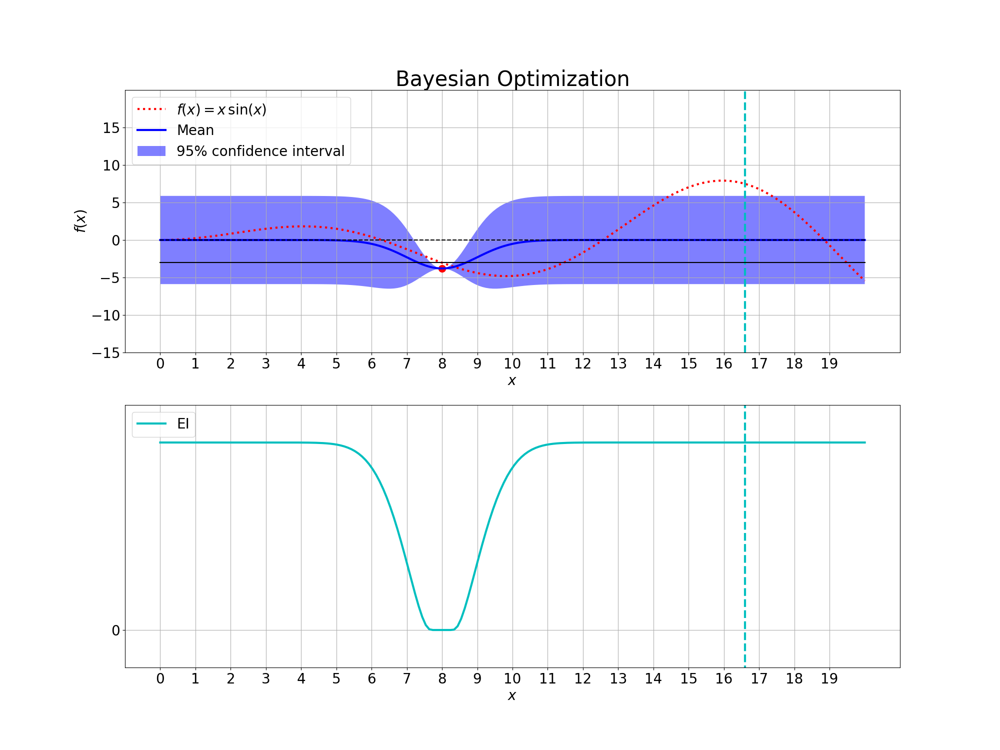 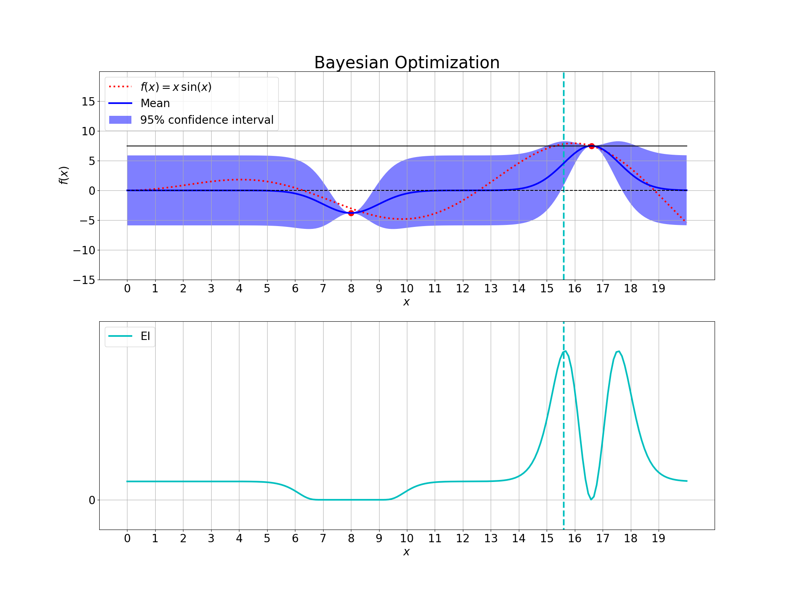 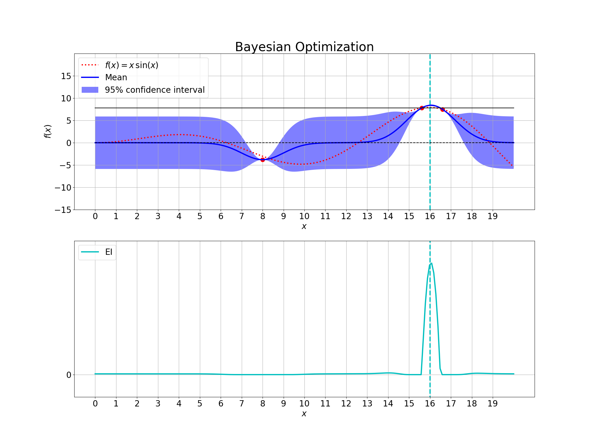 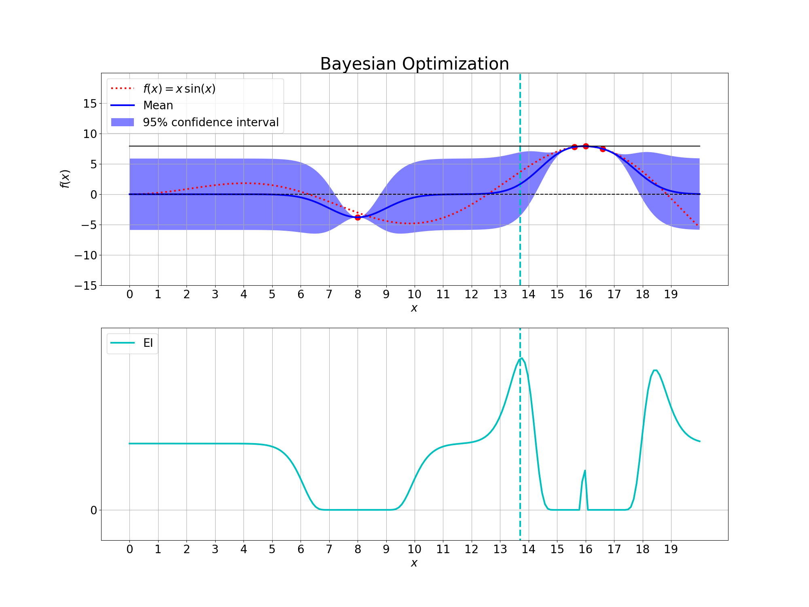 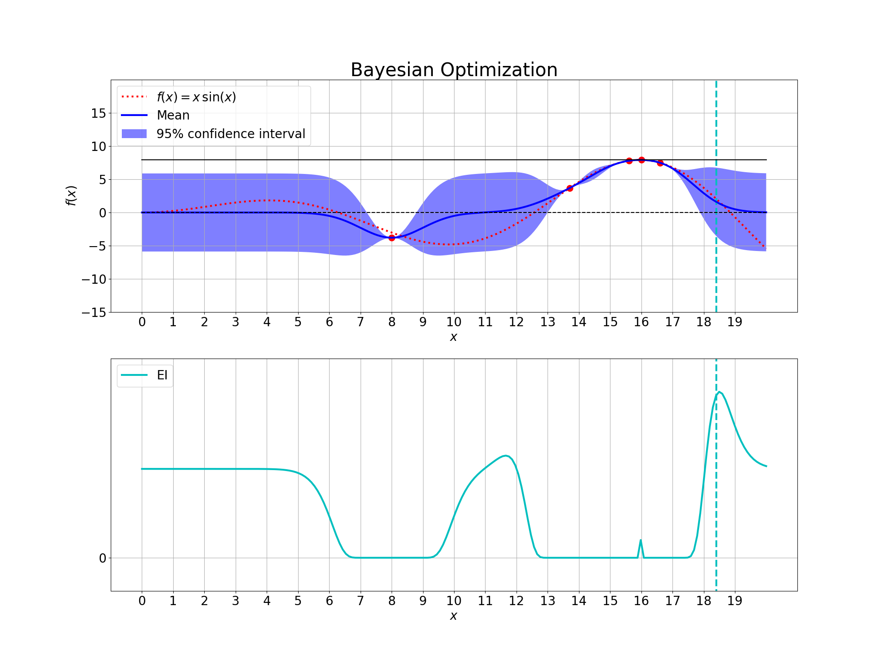 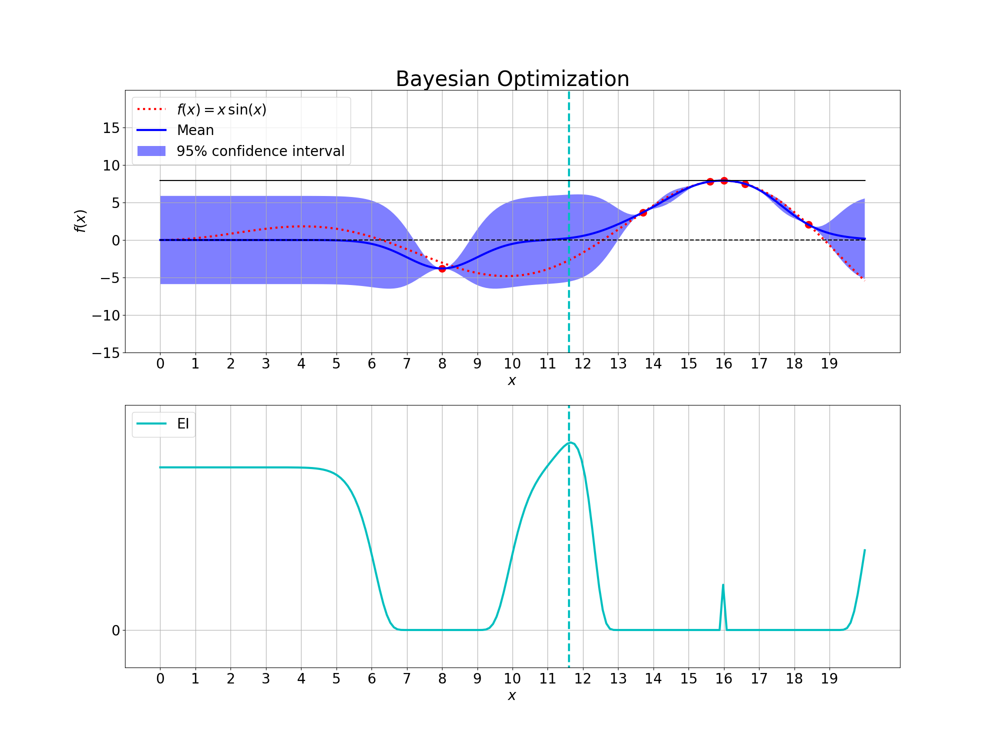 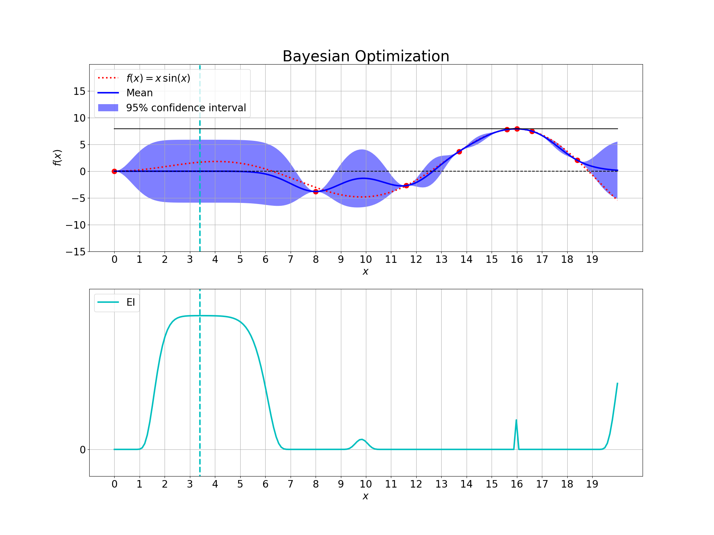 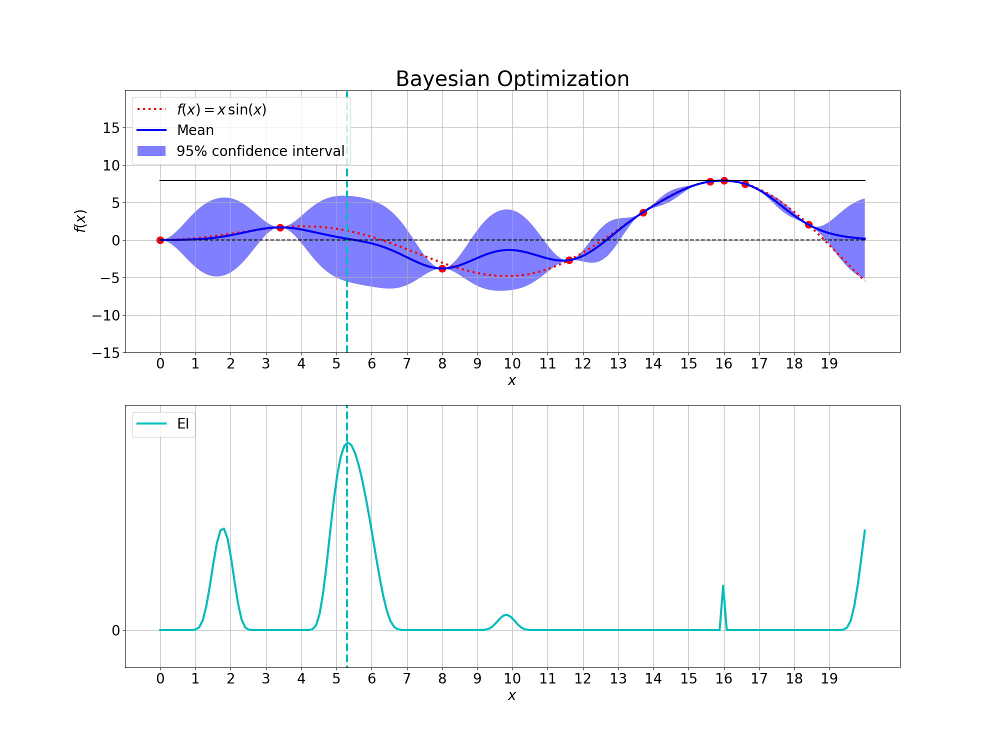 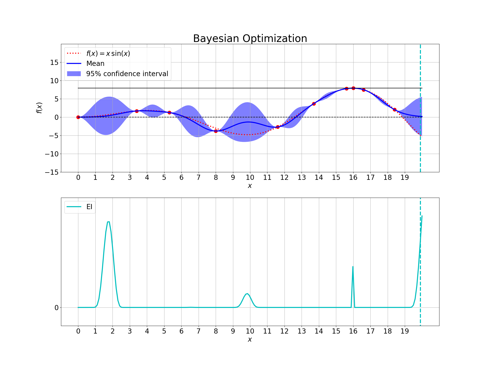 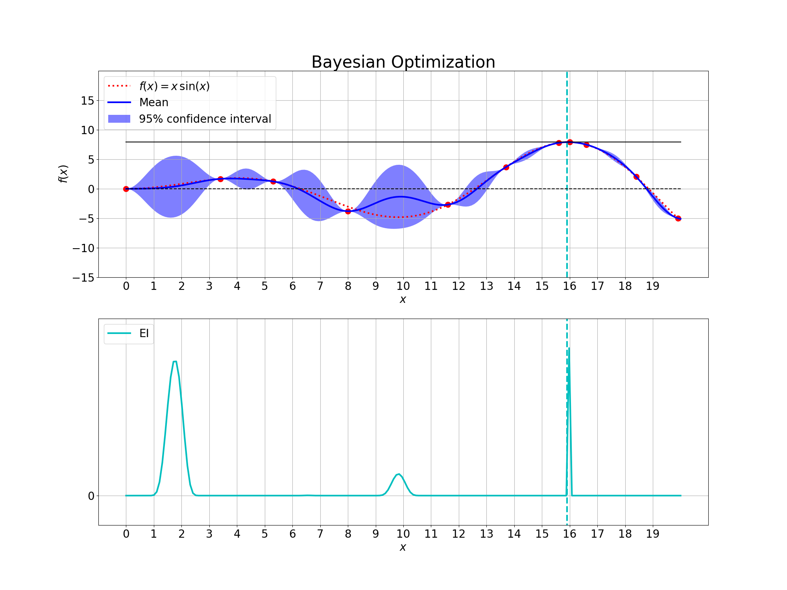 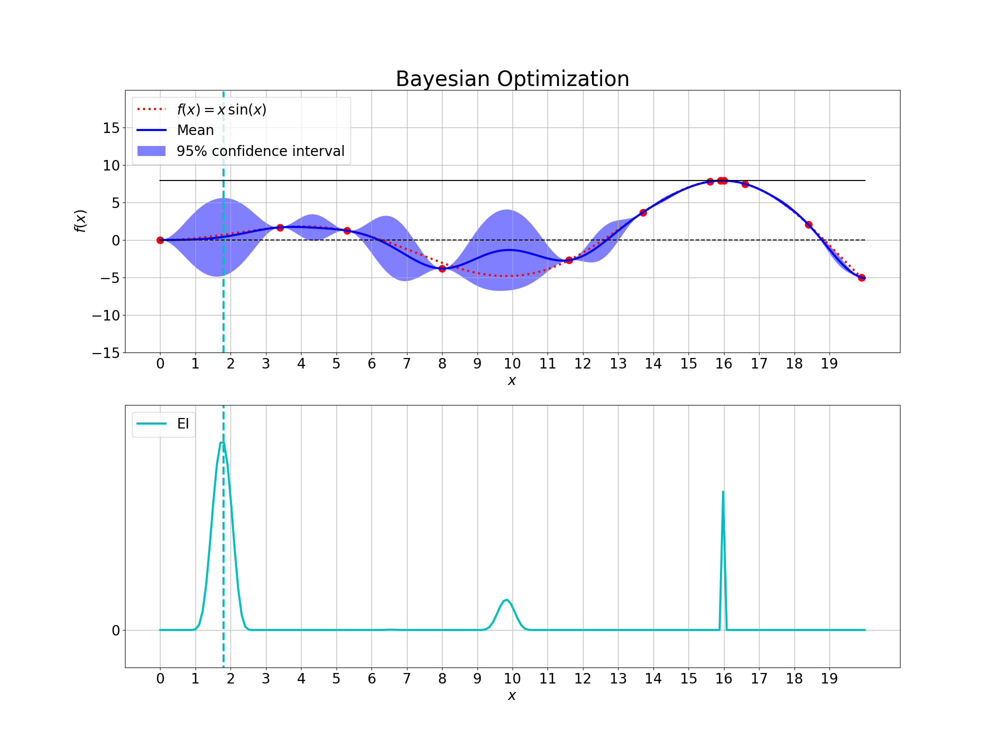 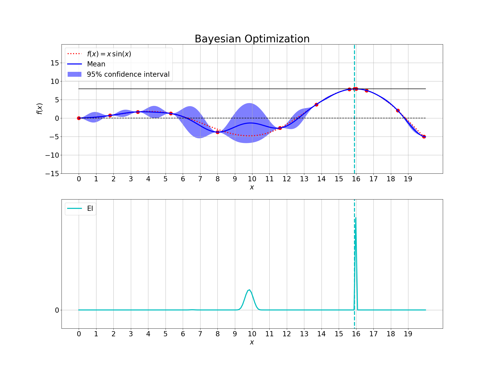 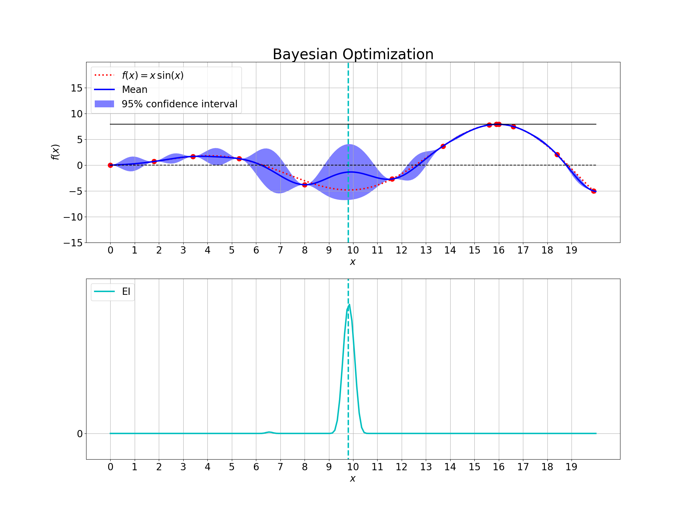 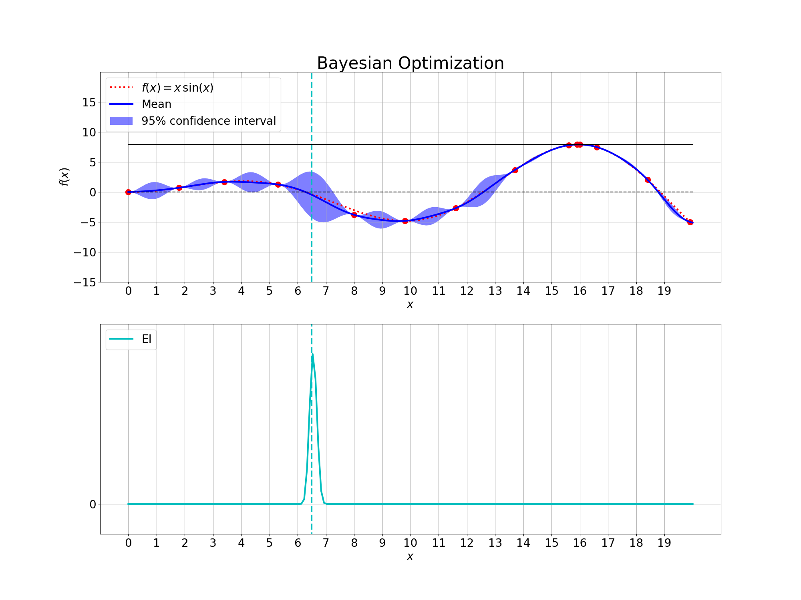